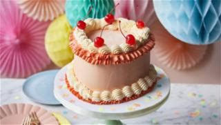

Birthday Cakes are really tasty, they are not that easy to make sometimes they are hard. Birthday Cakes are mostly served on people's birthdays, they enoy because the cakes are really tasty and very yummy.
This is an example of a Very Yummy and Delicious Birthday Cake.
(1st Bowl)
Flour
2 1/3 (290g)
Baking Powder
1/2 teaspoons
Baking soda
1/2 teaspoons
Sift
Salt
1/2 teaspoons
Mix
(2nd Bowl) Butter, Softend Sugar 1¹/2 cups (300g) Cream Together butter and sugar Eggs 3 ones at the time Beat until combined after each addition Oil 1/2 cups (120ml) Vanila Extract 1 tablespoon Beat until incorporated Addd 1/2 of the Flour Mixture Beat until combined Buttermilk 1/2 cups (120ml) Beat until combined Repeat (From the step " Addd 1/2 of the Flour Mixture") Divide the Butter between 8-inch (20cm) round cake pans Bake in 350F (175C) For 40min Allow the cake cool for 5-10min in the pan Release from the pan Let cool completely
(3rd Bowl) Butter Softend 2/3 cups (150g) Cream Cheese 1³/4 (400g) Beat until combined and smooth Icing Sugar 1¹/4 cups (160g) Vanila Extract 2 teaspoons Beat until smooth and creamy
(4th Bowl) Heavy Cream, cold 1/2 cups (120ml) Whiff to stiff peaks Fold into the Cheese Mixture Mix Spread a layer f frosting Pat the frosting on top of the bread Place the second cake on top of the cream frosting Spread the Frosting evenly on the top and on the sides of the cake Decorate with sprinkles (optional) Refrigerate for at least 2hrs
It is best you Follow all the steps and try your best to make it yummy!